Rechnungsliste
Offen, Bezahlt und Alle; Beträge, Status und Nachladen.
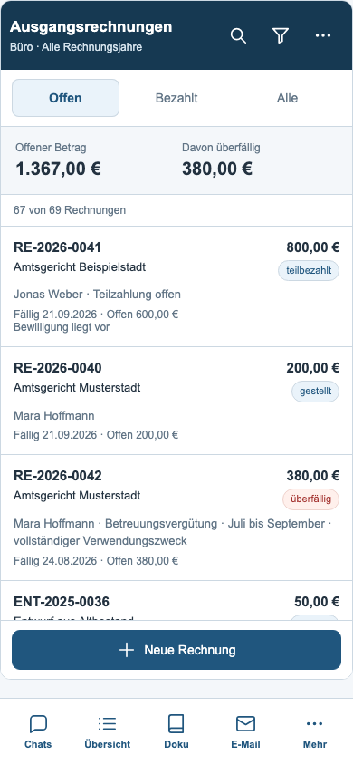
Spezifische Filter
Status, Rechnungsjahr, Empfänger, Fall, Fälligkeit und Sortierung.
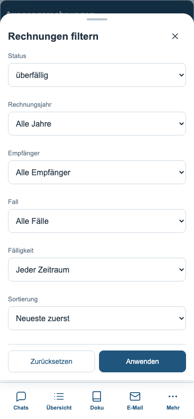
Rechnungsdetails
Vollständiger Zweck, Zeitraum, Zuordnung, Bewilligung und Zahlung.
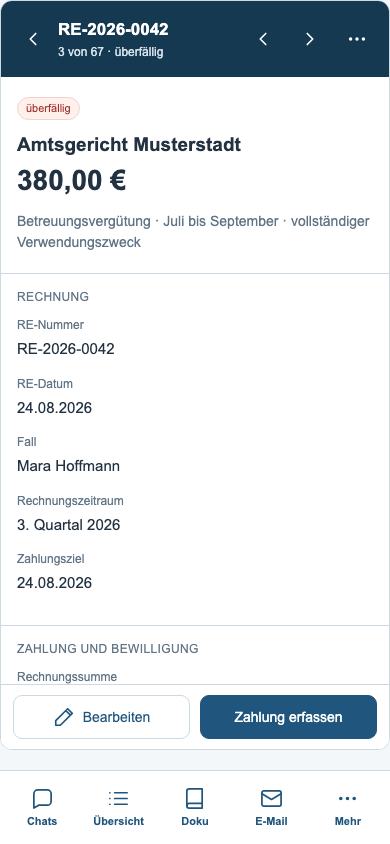
Bearbeiten
Elf vorhandene Felder in Abschnitten mit festen Aktionen.
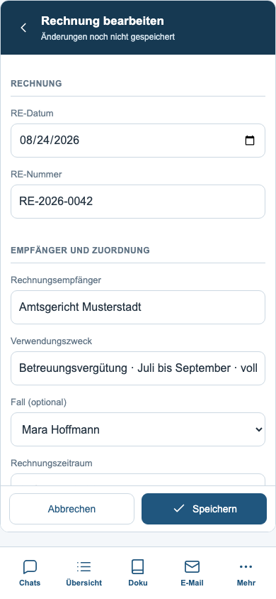
Zahlung erfassen
Teilzahlung bearbeiten oder den vollständigen Eingang bestätigen.
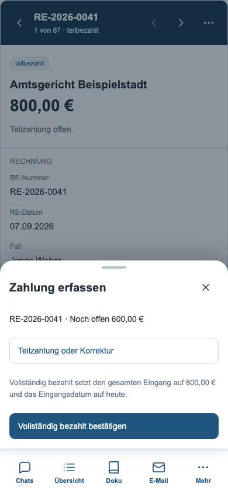
Vergütungsvorschau
Alle geladenen Vergütungsfristen mit Fallbezug.
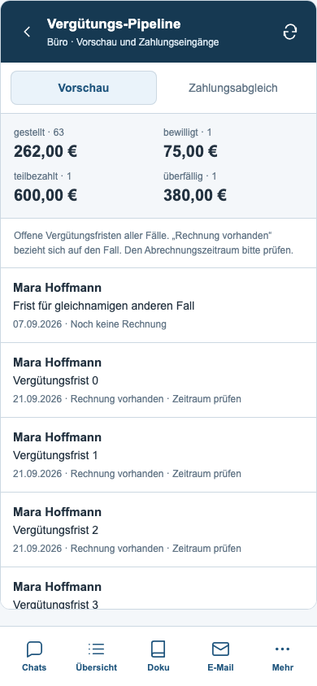
Zahlungsabgleich
Vorschläge aus den Büro-Kontoauszügen einzeln prüfen.
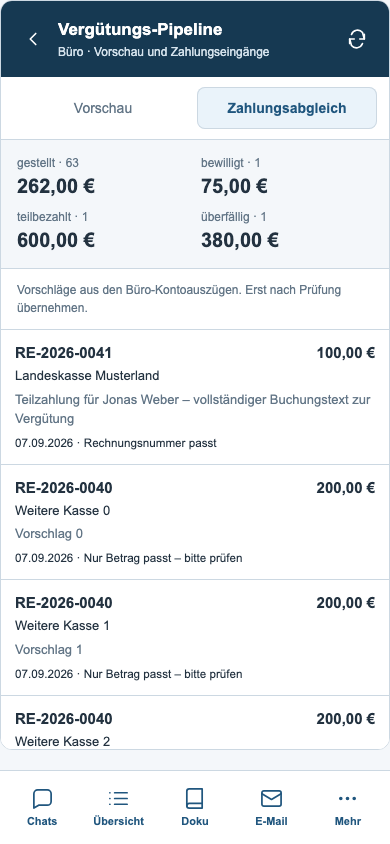
Zahlung zuordnen
Bisheriger Eingang, neue Zahlung und Restbetrag; Bestätigung am unteren Rand.
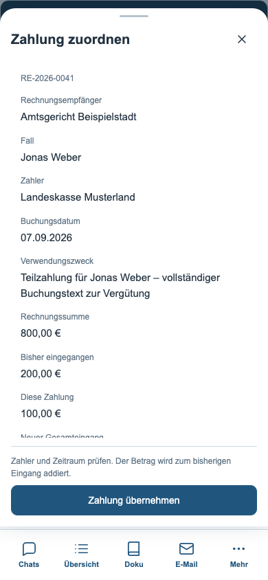
Speicherfehler
Fehler bleibt sichtbar, die Eingaben bleiben erhalten.
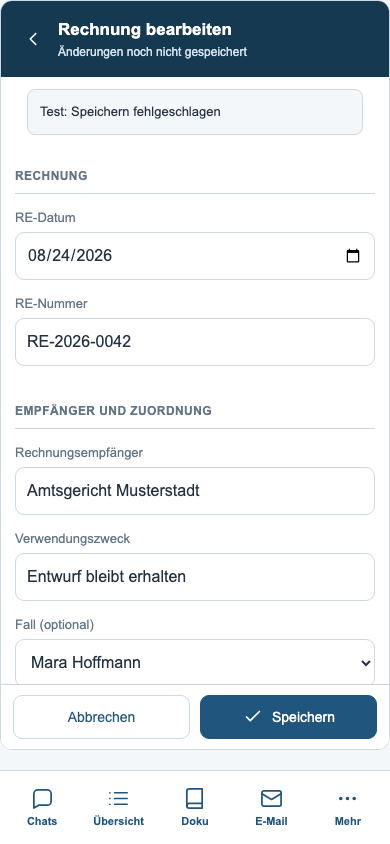
Abruffehler
Bestätigte Neuanlage bleibt gespeichert; erneuter Datenabruf möglich.
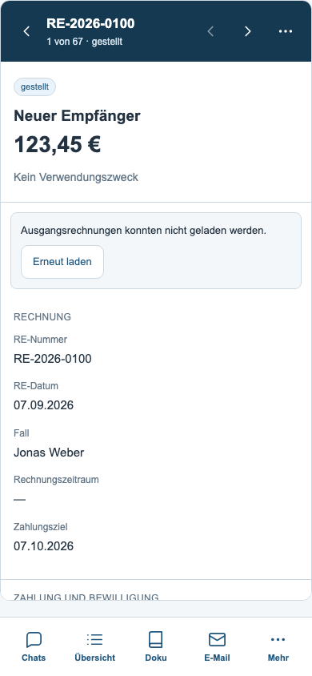
Geöffnete Tastatur
Navigation ausgeblendet, Formularaktionen erreichbar. VisualViewport simuliert.
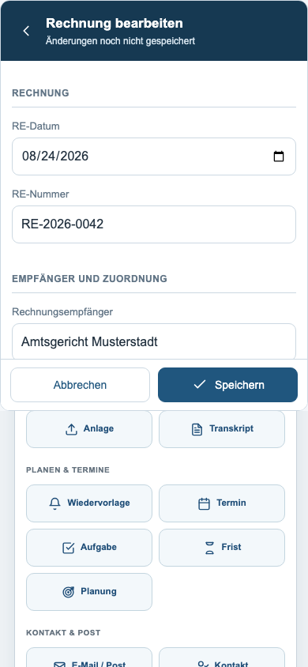
Dunkle Darstellung
Gemeinsame Farben und kontrastreiche Zustandskennzeichnung.
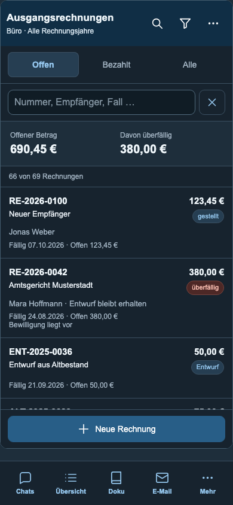